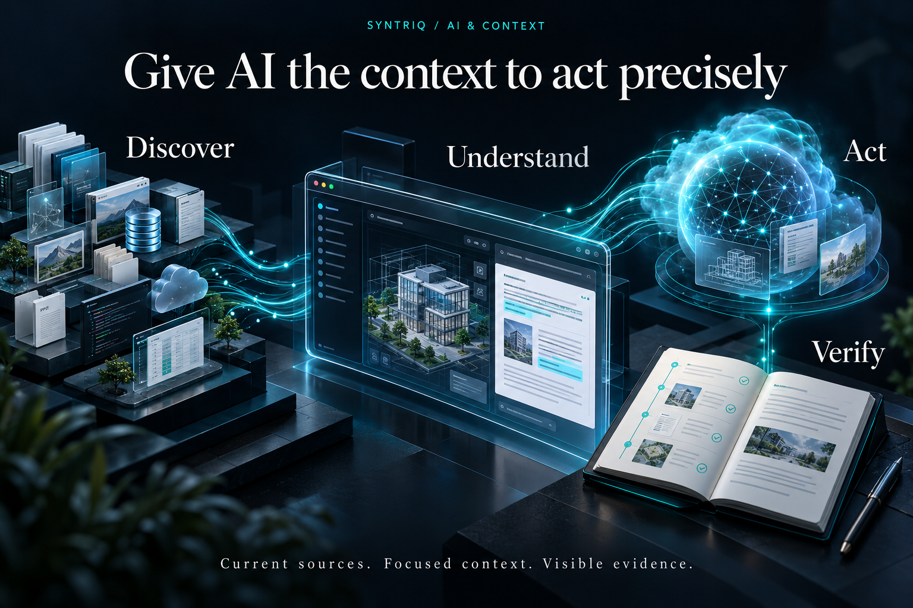

Make the application discoverable
An AI model can write a convincing answer without knowing which components your application already has. Syntriq’s integration design starts with an application catalogue: an index connecting models, forms, workflows, rules and tools to their sources, dependencies and evidence.
When an engineer asks for another approval condition, the catalogue helps locate the current workflow, the rule it calls, the form collecting the facts and the scenarios exercising the decision. That is a more useful starting point than a general description of the product.

Assemble context for the actual task
The Context Engine selects evidence for a bounded task. Exact names and text provide a direct starting point; known relationships reveal connected definitions. Source passages supply the detail needed to understand a contract. Additional retrieval methods can help navigate larger collections.
The selected context should remain inspectable: where each item came from, which source version it represents and why it was included. Missing or conflicting definitions become visible questions. They should not quietly turn into assumptions.
Connect reasoning to controlled tools
The OpenAI integration design uses an authenticated relay to connect cloud reasoning to the browser workbench. The primary adapter direction is the Responses API, behind an interface that allows model providers to change. Credentials belong at the authenticated boundary, outside the public static site.
The browser coordinator owns the task. A capability broker validates supported requests before invoking local tools or an explicitly configured external provider. The model can request a definition, propose a change or ask for a scenario run; each operation has an input contract and a defined result.

Keep context, memory and caching distinct
Context answers what this step needs to know. The task journal records decisions, attempted changes, results and unresolved questions. Caching avoids repeating eligible work, such as parsing an unchanged definition.
These layers have different validity rules. A journal records that a test ran, but the evidence must still match the candidate being reviewed. A cached result can be reused only when its relevant inputs and versions match. Efficiency and correctness require separate checks.
Return evidence to the engineer
The workbench connects proposed changes to runtime feedback: constraint violations, decision traces, behavioural comparisons and scenario outcomes. AI can use the results to investigate a failure and revise its proposal. The engineer can inspect both the change and the basis for it.
Optional research, repository and build providers extend the workflow through explicit capabilities. They do not erase the boundary between a proposed action and a permitted operation. The commercial value is a visible engineering process grounded in application-specific evidence.
Ground AI assistance in current application definitions, explicit tools and inspectable evidence.